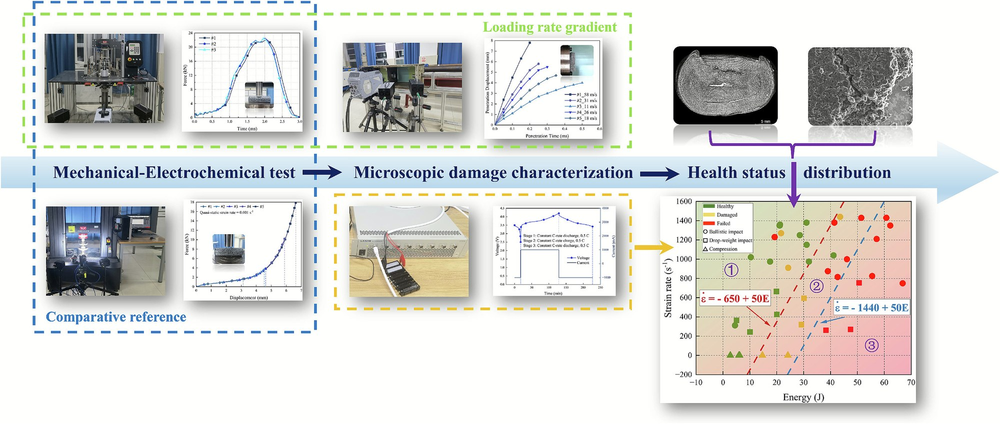
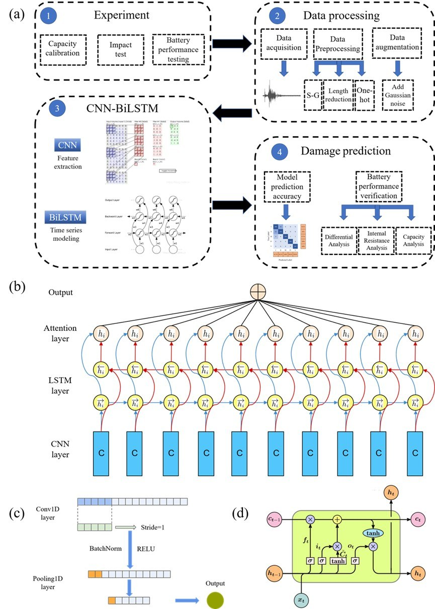
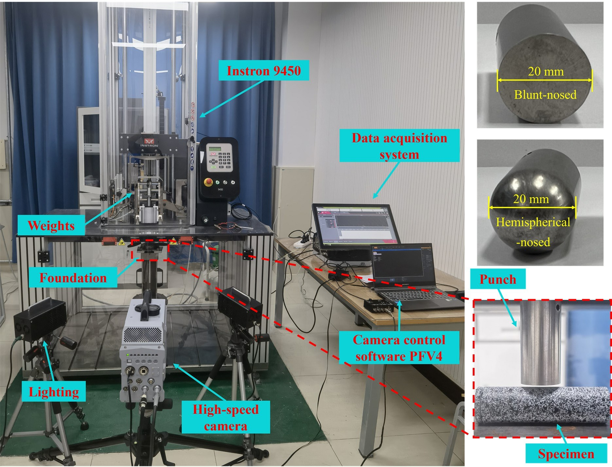
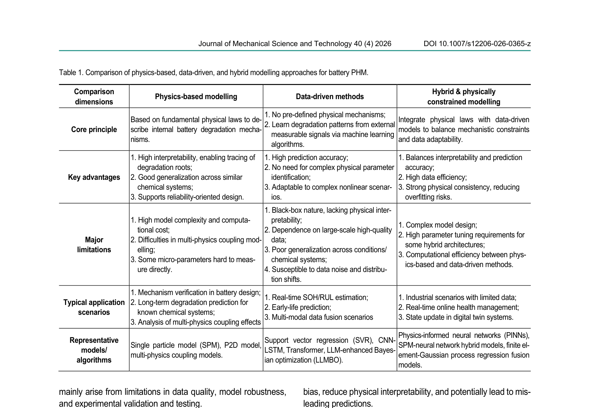

Lithium-ion batteries (LIBs) are increasingly deployed in safety-critical applications — electric vehicles, aerospace, and portable electronics — where they may be subjected to mechanical abuse including impact, crush, and penetration. Understanding how LIBs fail under dynamic loading, and developing systems to detect damage in real time, is essential for safe deployment.
This research program leverages Dr. Huang's background in impact mechanics and constitutive modeling to address battery safety from a fundamentally mechanical perspective. The work spans experimental characterization of failure modes, acoustic emission-based real-time monitoring with deep learning, multiphysics finite element modeling, and systematic review of the broader PHM field. The long-term vision is to apply constitutive modeling methods directly to battery electrode and separator materials — building a rigorous mechanical-electrochemical framework for safety under dynamic loading.




"The long-term academic vision is to establish impact dynamics — particularly constitutive modeling under high strain-rate loading — as the primary research identity. Battery impact safety serves as an important and strategically chosen application domain, where the physics of dynamic loading and structural failure are directly relevant. Future directions in this battery research thread will focus on deepening the mechanical-electrochemical coupling and developing more rigorous predictive frameworks for battery safety under dynamic abuse."— Long-term research vision: impact dynamics as core identity, battery safety as application domain